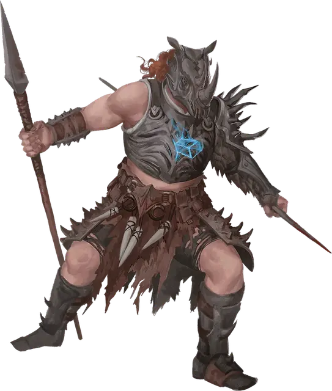

Безжалостный колосажатель
Relentless Impaler
Большое Исчадие, обычно нейтрально-злое

Класс Доспеха 16 (природный доспех)
Хиты 184 (16к10 + 96)
Скорость 30 футов
| мод | спас | ||
|---|---|---|---|
| СИЛ | 23 | +6 | +11 |
| ЛОВ | 16 | +3 | +8 |
| ТЕЛ | 22 | +6 | +6 |
| мод | спас | ||
|---|---|---|---|
| ИНТ | 12 | +1 | +1 |
| МДР | 15 | +2 | +2 |
| ХАР | 18 | +4 | +9 |
Навыки Атлетика +11, Восприятие +7, Выживание +7
Иммунитет к состояниям испуг, истощение, очарование
Чувства тёмное зрение 120 футов, пассивное Восприятие 17
Языки понимает все языки, но не говорит
Опасность 15 (13000 опыта)
Бонус мастерства +5
Особенности
Кол в сердце. Колосажатель магическим образом привязан к церемониальному колу и к принесенному в жертву трупу, который использовался заклинателем в ходе ритуала. Если хиты колосажателя опускаются до 0, то он исчезает, чтобы появиться вновь спустя 1к8 часов в ближайшем свободном пространстве от кола со всеми своими хитами. Колосажатель умирает только в том случае, когда его хиты опускаются до 0 и церемониальный кол вынут из принесенного в жертву трупа, либо колосажатель находился на другом плане существования от трупа.
Легендарное сопротивление (3/день). Если колосажатель проваливает спасбросок, он может вместо этого сделать спасбросок успешным.
Действия
Мультиатака. Колосажатель совершает одну атаку Шипом и две атаки Копьём скверны.
Шип. Рукопашная атака оружием: +11 к попаданию, досягаемость 5 футов, одна цель. Попадание: 15 (2к8 + 6) колющего урона, и скорость цели снижается вдвое до начала следующего хода колосажателя.
Копьё скверны. Рукопашная или дальнобойная атака оружием: +11 к попаданию, досягаемость 10 футов или дистанция 20/40 футов, одна цель. Попадание: 13 (2к6 + 6) колющего урона и 13 (3к8) урона некротической энергией.
Взрыв шипов (перезарядка 5-6). Перекрученные призрачные шипы выстреливают из тела колосажателя. Все существа в пределах 30 футов от колосажателя должны совершить спасбросок Ловкости Сл 19, получая 40 (9к8) урона силовым полем при провале или половину этого урона при успехе.
Легендарные действия
Колосажатель может совершить 3 легендарных действия, выбирая из представленных ниже вариантов. За один раз можно использовать только одно легендарное действие, и только в конце хода другого существа. Колосажатель восстанавливает использованные легендарные действия в начале своего хода.
Быстрый укол. Колосажатель телепортируется на расстояние до 30 футов в свободное пространство, которое он видит. Затем он может совершить атаку Шипом.
Ухудшение ран (стоит 2 действия). Все существа, чья скорость уменьшена в результате попадания атакой Шипом, получают 18 (4к8) урона некротической энергией.
Описание
В Доменах Ужаса практиканты чёрной магии проводят оскверняющий ритуал, превращающий живых существ в безжалостных убийц. Для этого ритуала необходимо использовать церемониальный кол, который вонзается в сердце ещё живой жертвы. Затем из её лужи крови рождается громадная фигура безжалостного колосажателя с копьем в руке.
Безжалостный колосажатель связан с существом, которое держало церемониальный кол во время ритуала, породившего его. Пока изначальный кол остаётся в сердце жертвы ритуала, колосажатель может возвращаться снова и снова, чтобы возродиться рядом с телом жертвы, независимо от того, сколько раз тот будет уничтожен.
Колосажатель преследует цели своего создателя холодно и эффективно. Он не заботится о самосохранении, зная, что, по крайней мере для него, смерть — это не конец.